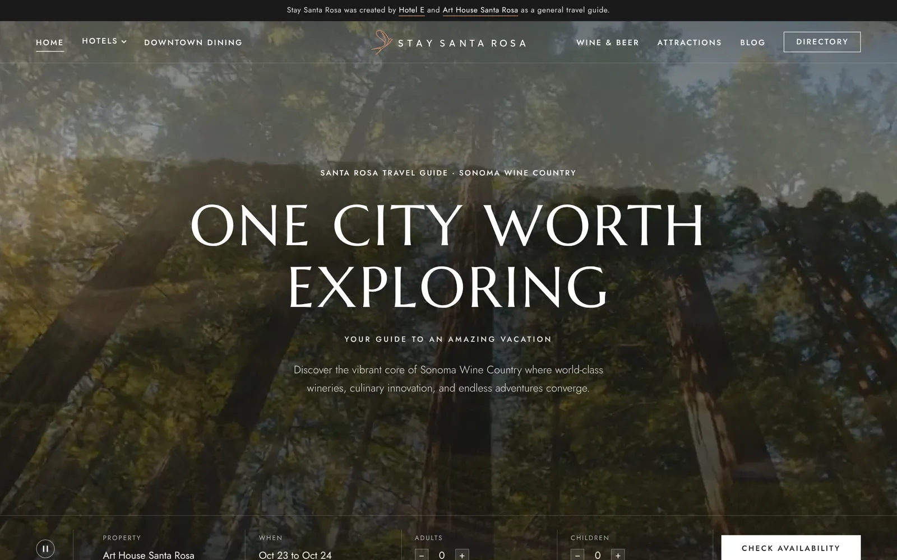
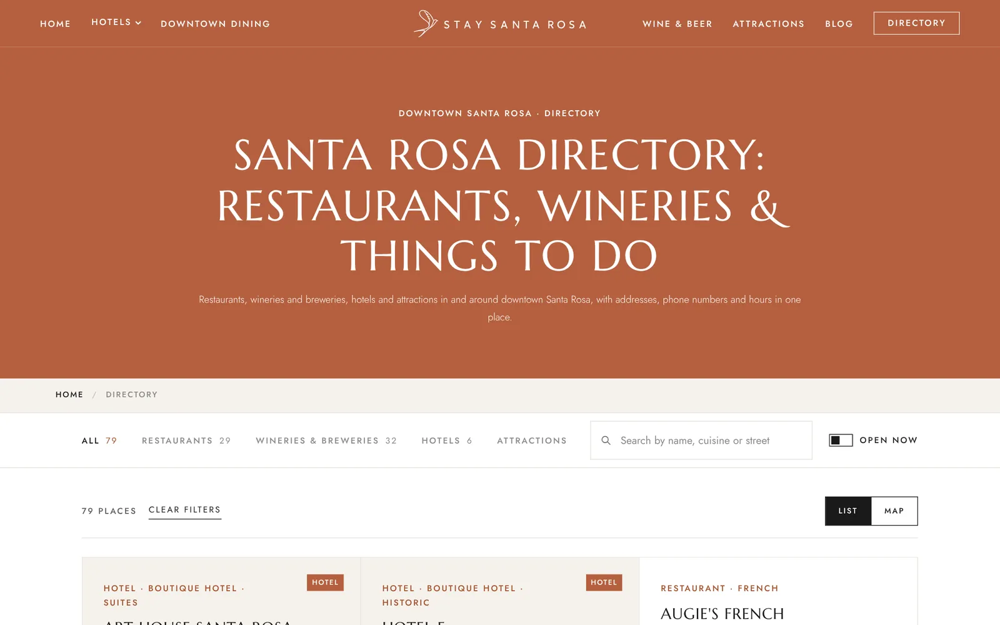
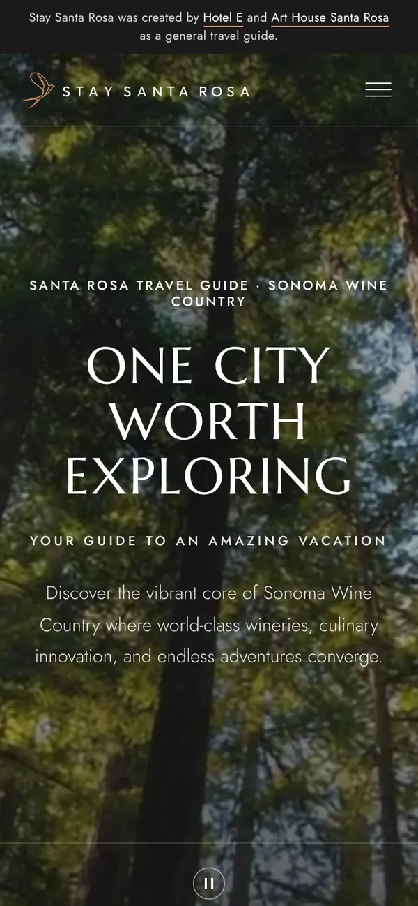
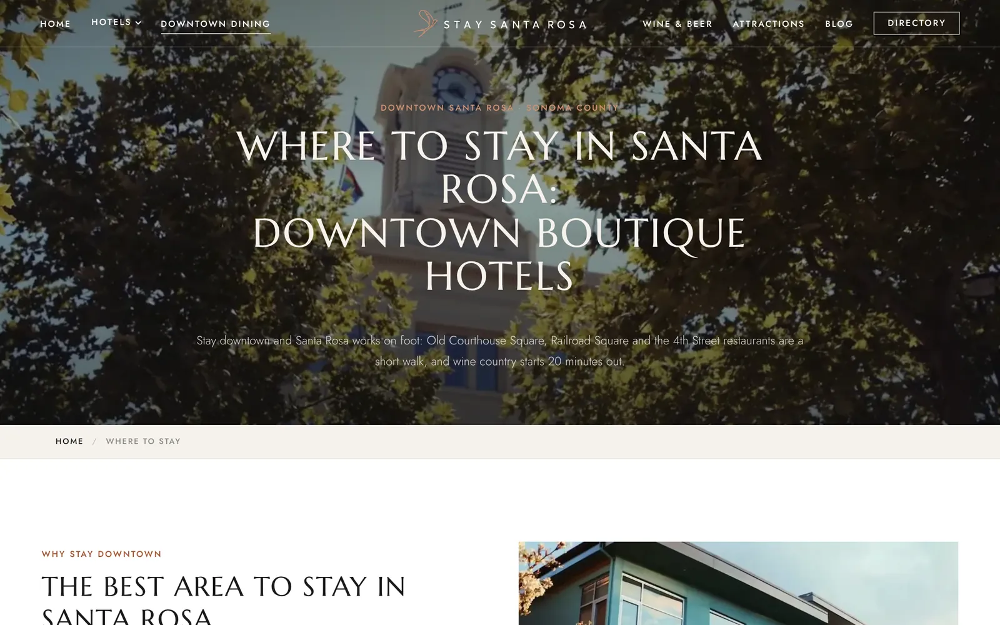

Stay Santa Rosa
A travel guide to Santa Rosa and Sonoma wine country, created by two downtown hotels — Hotel E and Art House Santa Rosa. It helps visitors plan the trip, then sends them to book directly with the hotels.

A guide first. A booking engine second.
Two hotels a few blocks apart wanted to be found by people planning a Sonoma trip — not just people already searching for a hotel.
So the site leads with the city: where to eat, where to taste, what to see, and why downtown is a walkable base for wine country. The hotels sit inside that story, and every booking button goes straight to the hotel's own site.
The look is editorial — big serif headlines, a quiet palette and full-bleed video — so it reads like a magazine, not an ad.
79 places, one search box.
Restaurants, wineries and breweries, hotels and attractions in and around downtown, with addresses, phone numbers and hours in one place.

Straight to the hotel, no middleman.
The booking bar on the home page takes the property, dates and number of guests, then hands the visitor to that hotel's own booking page.
No third-party booking site in between — the guest books with the hotel.

Planned around the trip, not the hotel.

Dining, wine & attractions
A section each for downtown dining, wine and beer, and things to do, plus a journal of longer reads.
Neighborhoods
Old Courthouse Square, Railroad Square and the 4th Street corridor, and how they fit together on foot.
Both hotels, side by side
Art House and Hotel E compared side by side, so guests pick the one that suits the trip.
Want a site people plan around?
Hotels, venues and local businesses — we'll build the guide your guests are already searching for.
Wanderlust Santa Rosa